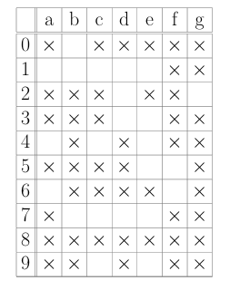
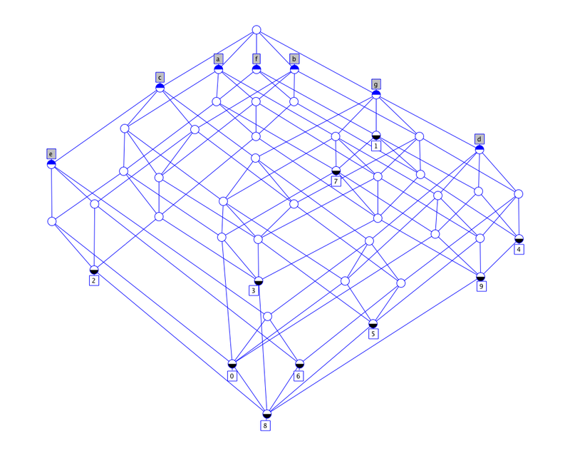
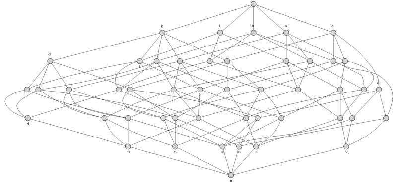
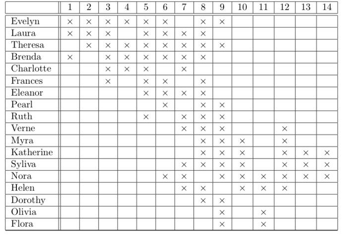
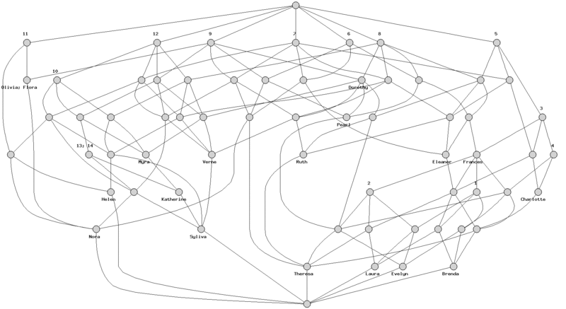
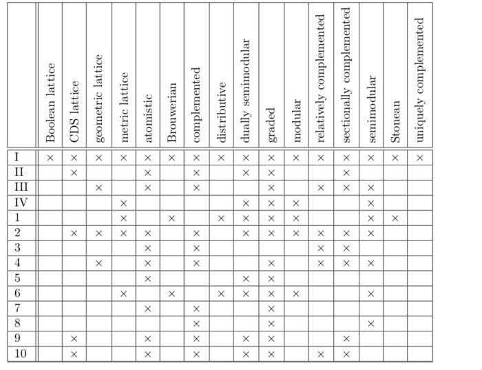
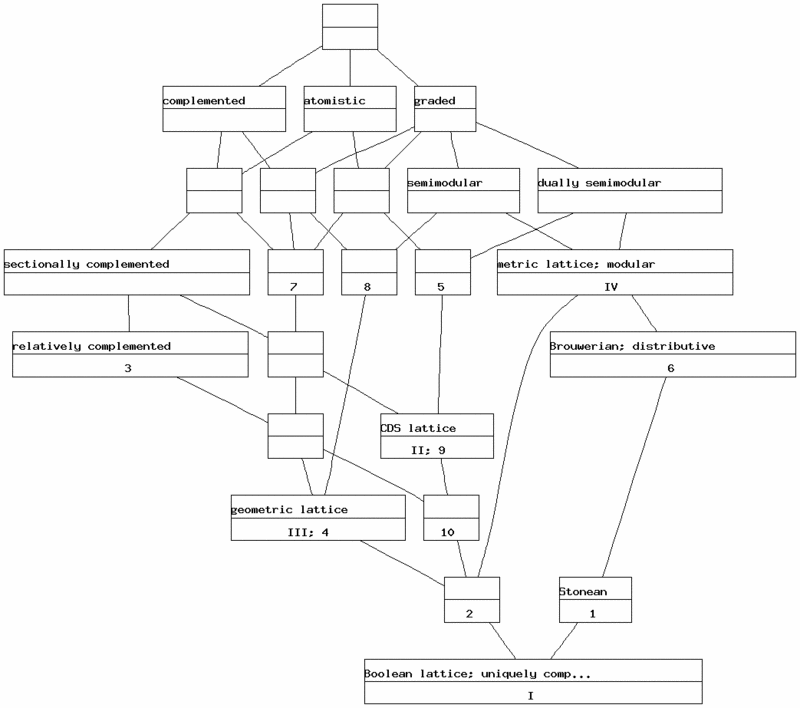
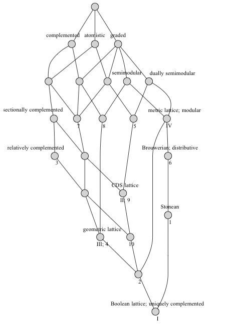
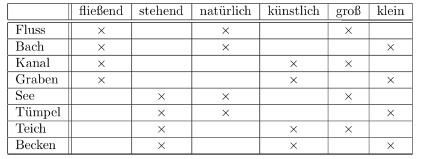
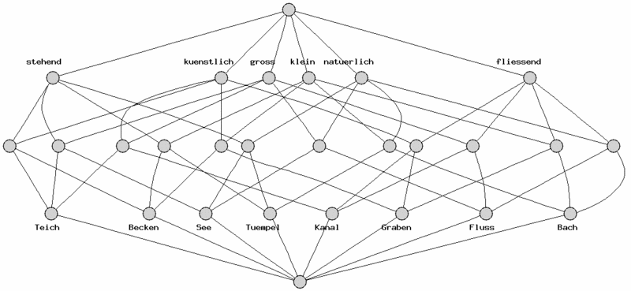

Contents: Digits -- Tea Ladies -- Lattice of lattice properties -- Bodies of water -- Live in water -- References
This webpage shows some of Rudolf Wille's "classic" examples of formal contexts. (The references for the papers from which they are taken are below.) The examples are provided here without explanation of their background (which can be found in Wille's papers). It is reasonably challenging to derive good layouts for these examples. Thus these examples can serve as test cases for graph layout software. The lattice diagrams which have blue lines were drawn with ConExp. All other diagrams were produced with FcaStone, which uses Graphviz for its layouts. A more detailed comparison of these examples can be found in Priss (2008) (pdf).
The focus of these examples is graph layout. Other data sets are needed
for testing algorithms for buildling lattices.
Digits
Download cxt file

Digits: Lattice drawn in Conexp (copying Wille's layout):

Digits: Lattice generated by FcaStone/Graphviz:


Tea Ladies: Lattice generated by FcaStone/Graphviz:

Lattice of lattice properties
Download cxt file

Lattice properties: Lattice generated by FcaStone/Graphviz (using -b):

Lattice properties: Lattice generated by FcaStone/Graphviz (labels were moved afterwards):

Bodies of water
Download cxt file

Bodies of water: Lattice generated by FcaStone/Graphviz:

Live in water
Download cxt file

Live in water: Lattice drawn in Conexp (copying Wille's layout):

Live in water: Lattice generated by FcaStone/Graphviz (labels were moved afterwards):

Bodies of water, live in water:
Tealadys, lattice of lattice properties:
Sources
Digits:
Stahl, J.; Wille, R. (1986). Preconcepts and set representation of contexts.
In: Gaul & Schader (eds): Classification as a tool of research.
Wille, Rudolf (1984). Liniendiagramme hierarchischer Begriffssysteme.
Studien zur Klassifikation. Indeks Verlag.
Wille, Rudolf (1992). Concept Lattices and Conceptual Knowledge Systems.
Computers Math. Applic., 23, 6-9, p 493-515.
www.upriss.org.uk
Please send comments about this site to: